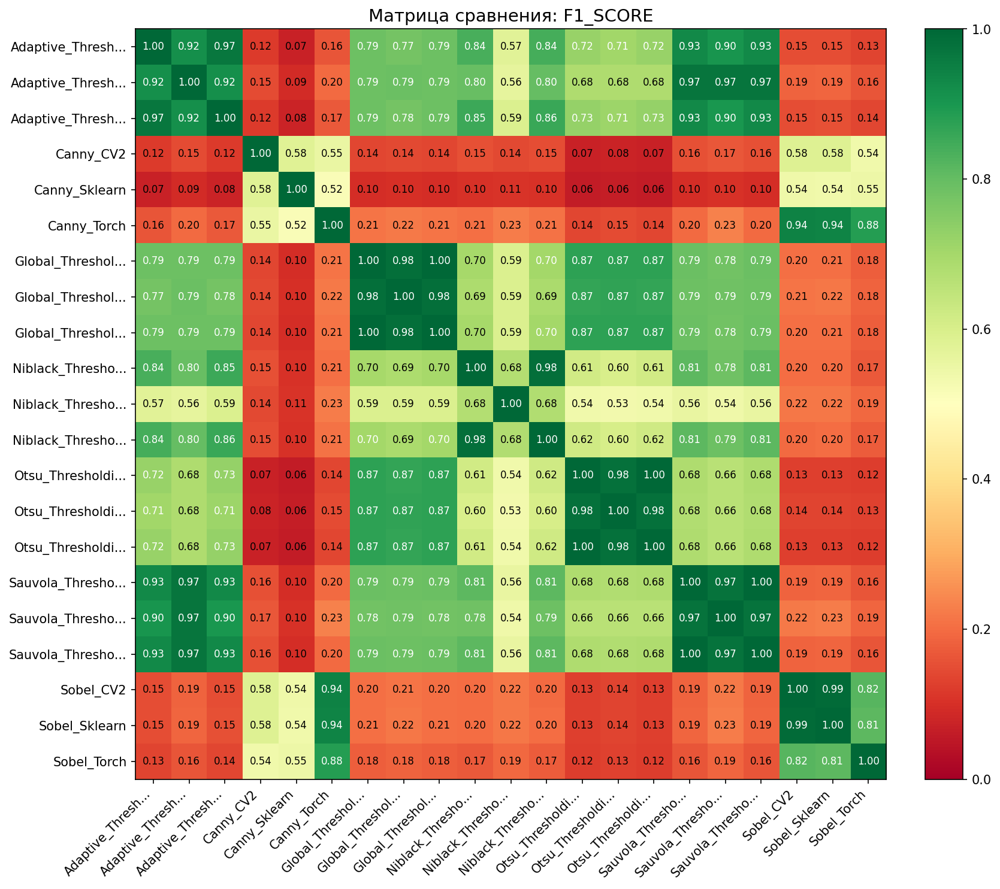
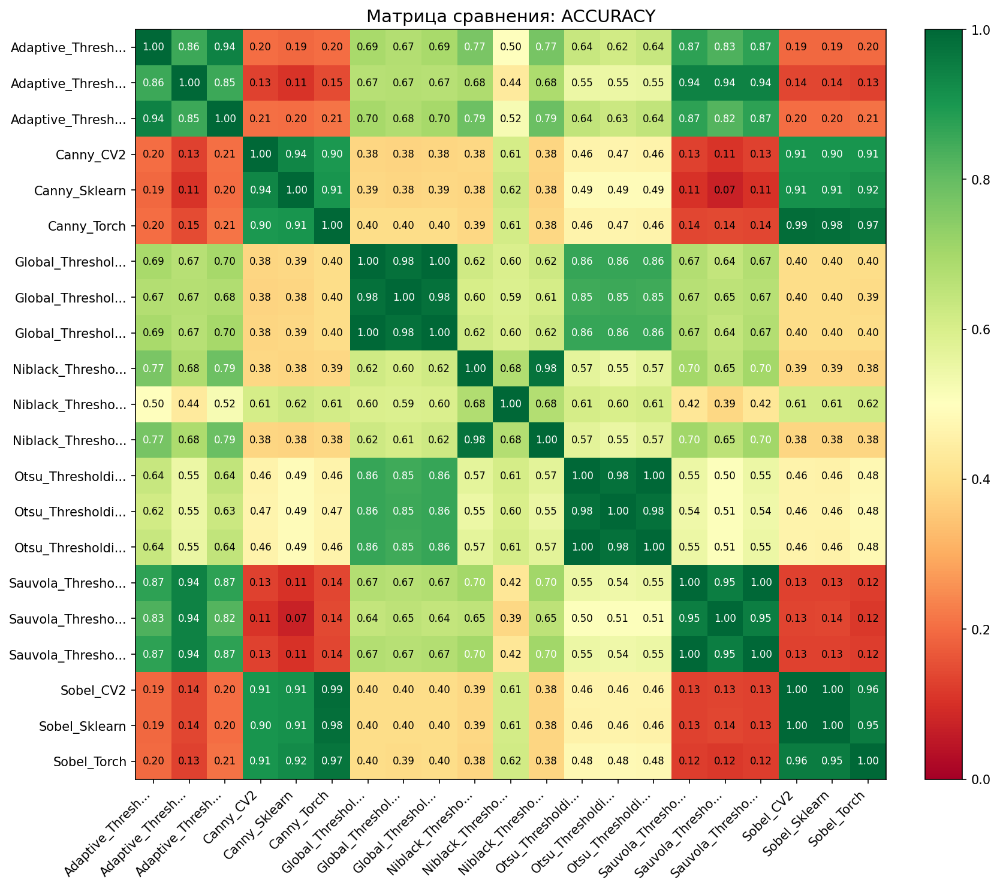
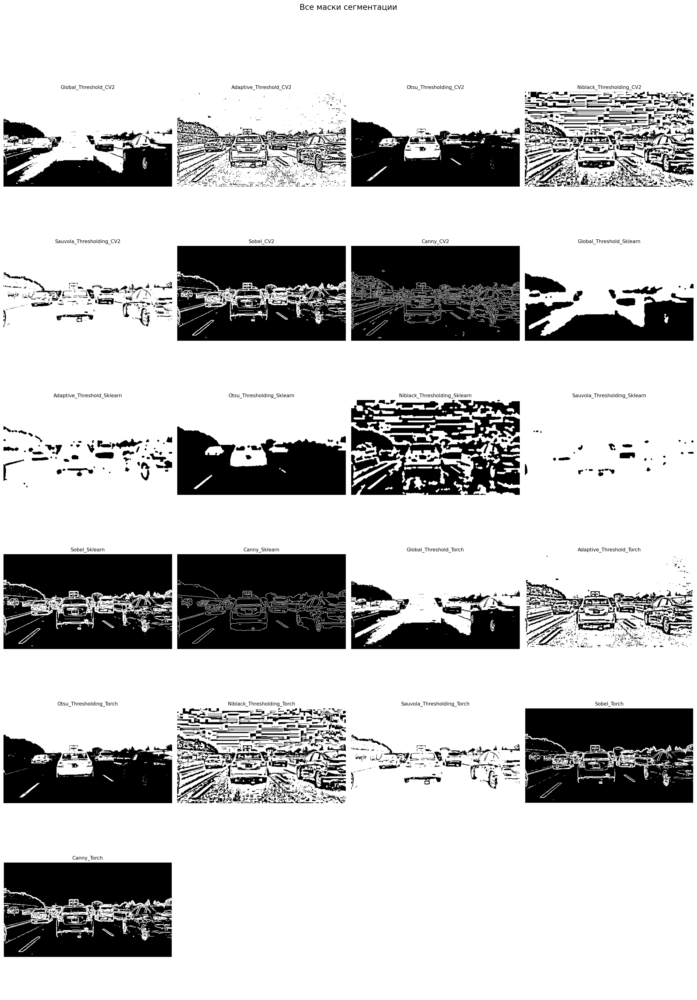

Дата: 2026-03-19 10:15:24
Всего методов: 21
Тип сравнения: all_vs_all
Референсный метод: Нет (все со всеми)



Сравнение всех со всеми
| Метод | Площадь маски | Покрытие | Время (с) |
|---|---|---|---|
| Sauvola_Thresholding_Sklearn | 126,950 | 98.0% | 0.012 |
| Sauvola_Thresholding_CV2 | 121,006 | 93.4% | 0.001 |
| Sauvola_Thresholding_Torch | 121,001 | 93.4% | 0.047 |
| Adaptive_Threshold_Sklearn | 120,128 | 92.7% | 0.011 |
| Adaptive_Threshold_CV2 | 105,667 | 81.5% | 0.000 |
| Adaptive_Threshold_Torch | 104,747 | 80.8% | 0.001 |
| Niblack_Thresholding_Torch | 82,628 | 63.8% | 0.046 |
| Niblack_Thresholding_CV2 | 82,148 | 63.4% | 0.001 |
| Global_Threshold_Sklearn | 82,033 | 63.3% | 0.010 |
| Global_Threshold_CV2 | 80,917 | 62.4% | 0.000 |
| Global_Threshold_Torch | 80,917 | 62.4% | 0.004 |
| Otsu_Thresholding_Sklearn | 63,042 | 48.6% | 0.010 |
| Otsu_Thresholding_Torch | 62,803 | 48.5% | 0.001 |
| Otsu_Thresholding_CV2 | 62,759 | 48.4% | 0.000 |
| Niblack_Thresholding_Sklearn | 47,295 | 36.5% | 0.012 |
| Canny_Torch | 18,089 | 14.0% | 0.001 |
| Sobel_Sklearn | 17,465 | 13.5% | 0.002 |
| Sobel_CV2 | 17,192 | 13.3% | 0.001 |
| Sobel_Torch | 14,314 | 11.0% | 0.001 |
| Canny_CV2 | 12,137 | 9.4% | 0.000 |
| Canny_Sklearn | 7,210 | 5.6% | 0.004 |